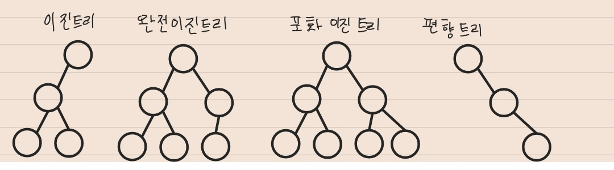

트리
방향 그래프의 일종으로 정점을 가리키는 간선이 하나 밖에 없는 구조를 가지고 있다.
ex) 사내 조직도, 소프트웨어에서는 디렉토리 구조
용어
- Node: 각 정점
- Root: 최상단 노드
- Leaf Node: 더 이상 자식이 없는 노드
- Level: Root로 부터 몇 번째
깊이인지 표현 - Degree: 한 정점에서 뻗어져 나가는 간선의 개수(차수라고도 함)
특징
- 루트 정점을 제외한 모든 정점은 반드시 하나의 부모정점을 가진다.
- 정점이 N개인 트리는 반드시 N-1개의 간선을 가진다.
- 루트에서 특정 정점으로 가는 경로는 유일하다.
구현 방법
그래프와 마찬가지로 인접 행렬, 인접 리스트 두가지 방식으로 트리를 표현할 수 있다.
이진트리
- 이진트리: 각 정점이
최대 2개의 자식을 가지는 트리를 의미한다. - 완전이진트리: 마지막 Level을 제외하고 모든 정점이 채워져있는 형태
- 포화이진트리: 마지막 Level까지
모든 정점이 채워져있는형태 편향트리:
한 방향으로만 정점이 이어진 형태
이진트리의 특징
- 정점이 N개인 이진트리는 최악의 경우 높이가 N이 될 수 있다.
- 정점이 N개인 포화 또는 완전 이진 트리의 높이는 log N이다.
- 높이가 h인 포화 이진 트리의 높이는 $2^h-1$개의 정점을 가진다. 이진법을 생각하면 편함
- 일반적인 이진 트리를 사용하는 경우는 많지 않지만 이진탐색트리, 힙, AVL트리, 레드 블랙트리에 응용된다.
이진트리의 구현 방법
배열 혹은 요소에 링크가 2개 존재하는 연결 리스트로 구현 할 수 있다.
이진트리 시간복잡도
- 접근: O(log(n))
- 탐색: O(log(n))
- 삽입: O(log(n))
- 삭제: O(log(n))
트라이
문자열을 저장하고 효율적으로 탐색하기 위한 트리 형태의 자료구조
특징
- 검색어 자동완성, 사전 찾기 등에 응용될 수 있다.
- 문자열을 탐색할 때 단순하게 비교하는 것보다 효율적으로 찾을 수 있다.
- L이 문자열 길이일 때 탐색, 삽입은 O(L)만큼 걸린다.
- 대신 각 정점이 자식에 대한 링크를 전부 가지고 있기에 저장 공간을 더 많이 사용한다.
구조
루트는 비어있다.- 각 간선(링크)은
추가될 문자를 키로 가진다. - 각 정점은 이전 정점의 값 + 간선의 키를 값으로 가진다.
- 해시 테이블과 연결 리스트를 이용하여 구현할 수 있다.
🚑깨달은 점
학교에서 수업과 알고리즘 공부를 하면서 트리라는 개념은 알고 있었다. 그래서 공부하는데 쉽게 접근할 수 가 있었다. 평소에 Tree를 다른 사람 코드를 보고 구현한 비중이 100%라면 이번엔 직접 Tree에 들어갈 Queue를 class로 구현해보고 코드를 참고한 비중이 10%정도 낮아졌다. 이렇게 된 이유는 평소 트리에 대한 이해가 있었지만 구현하면서 계속 노트에 트리를 구현하면서 일어날 상황을 예측하면서 코드로 옮기려는 생각이 가장 크게 작용한 거 같다.
자료구조를 공부할 때는 코드를 짜는 것이 더욱 재밌고 이해가 잘됐다. 알고리즘이 아닌 JS에 정의를 공부할 때는 생각하고 직접 코드를 짜면서 공부해야겠다!😎